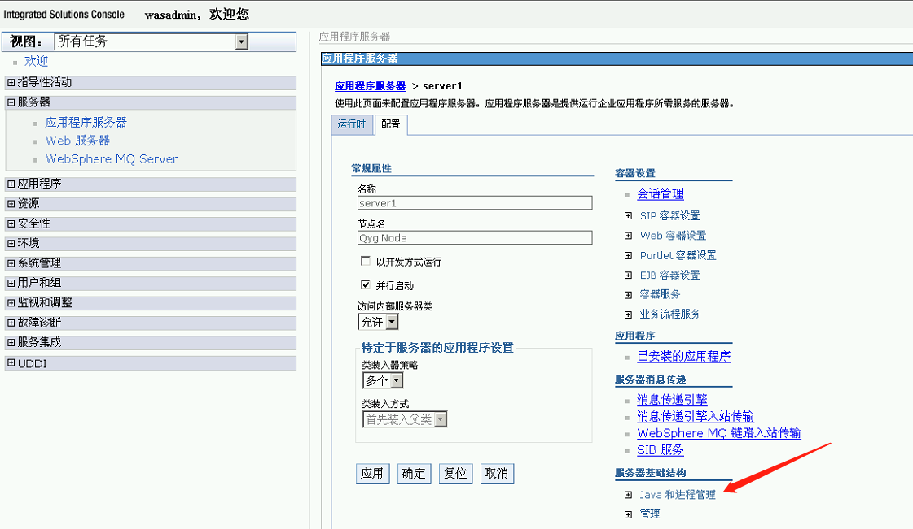
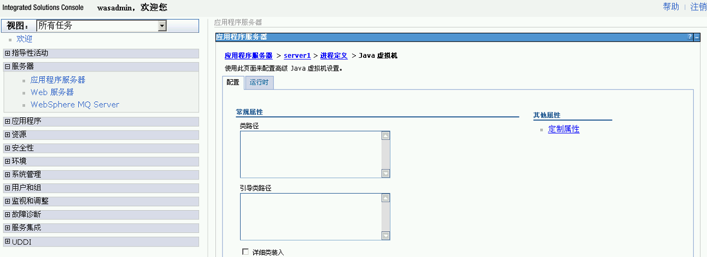
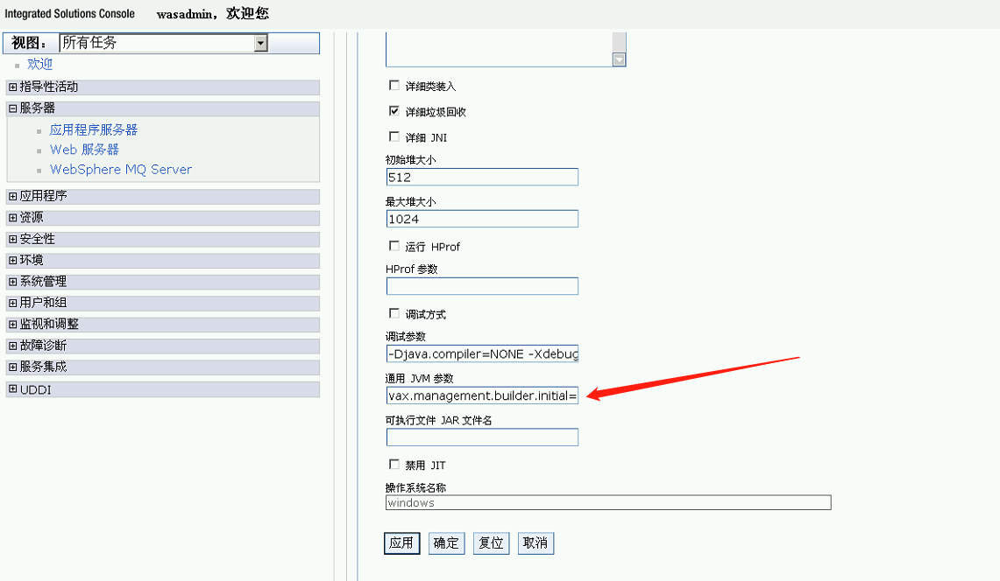

JMX
官方文档：
zabbix-java-gateway
- 安装
yum install zabbix-java-gateway - 配置文件
/etc/zabbix/zabbix_java_gateway.conf - 日志配置文件
/etc/zabbix/zabbix_java_gateway_logback.xml - 修改
zabbix_server.conf- JavaGateway=127.0.0.1 #修改为zabbix-java-gateway所在主机的ip地址，这里是和zabbix-server安装在同一台主机所以为127.0.0.1
- JavaGatewayPort=10052 #默认监控端口为10052
- StartJavaPollers=16 #建议和CPU核数相等
Tomcat
创建配置文件vim /etc/tomcat/conf.d/jmx.conf
export CATALINA_OPTS="-Dcom.sun.management.jmxremote
-Dcom.sun.management.jmxremote.port=12345
-Dcom.sun.management.jmxremote.rmi.port=12345
-Dcom.sun.management.jmxremote.ssl=false
-Dcom.sun.management.jmxremote.authenticate=false
-Djava.rmi.server.hostname=<本机IP>"
重启tomcatsystemctl restart tomcat
防火墙开启12345端口
Zabbix配置主机的宏，将默认的nio改成bio
WebSphere
常见的两种方案：
通过perfServletApp进行监控
perfServletApp项目是由WebSphere提供的（在安装目录下可以找到PerfServletApp.ear ，默认没有部署），用于简单的端对端检索性能数据， IBM或第三方供应商提供的任何工具都可以处理此性能数据。通过servlet访问，返回XML 格式的信息，然后解析XML即可获得相应的监控数据。
使用JMX 接口开发监控程序
通过使用PerfMBean或个别MBean，您可使用AdminClient API获取性能监控基础结构（ PMI ）数据。
从console上开启jmx 参考文档
服务器 > 应用程序服务器 > server1 > 配置 > 服务器基础结构 > Java和进程管理

进程定义 > Java虚拟机

通用 JVM 参数 
定制属性
Name: java.rmi.server.hostname
Value: <本机IP>
Name: com.sun.management.jmxremote
Value: true
Name: com.sun.management.jmxremote.port
Value: 12345
Name: com.sun.management.jmxremote.rmi.port
Value: 12345
Name: com.sun.management.jmxremote.ssl
Value: false
Name: com.sun.management.jmxremote.authenticate
Value: false
东方通TongWeb
ps -ef|grep tong
conf/tongweb.xml中address指定ip
控制条添加jvm变量 -Djava.rmi.server.hostname=192.168.0.151 -Dtongweb.jconsole.cbport=7201 -Dtongweb.rmijmx.cbport=7201
http://192.168.0.151:9061/console/ 用户名/密码:thanos/thanos123.com
service:jmx:rmi:///jndi/rmi://192.168.0.151:7201/jmxrmi 用户名/密码:thanos/thanos123.com
jconsole
jdk安装时候选择工具，bin目录下有jconsole.exe
zabbix配置
可以通过jmx.discory模块发现可用的mbean的名称和属性 JMX自动发现参考文档 JMX监控参考文档